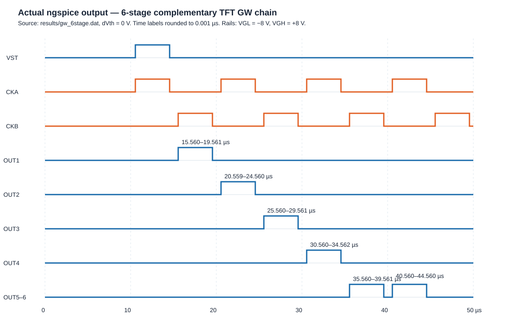

GW 예제 실행 결과
실행 명령: bash scripts/run_gw_example.sh <dVth>
회로·해석 조건
- OpenVAF로 공통 3단자 TFT Verilog-A 모델
models/tft.va를build/tft.osdi로 컴파일. - PMOS 카드: M1·M3·M8, NMOS 카드: M2·M4~M7·M9·M10.
- 6단 complementary-TFT 체인, VGH=+8 V, VGL=−8 V, 5 µs 슬롯, 4 µs 펄스 폭.
- ngspice 과도해석: Gear, 최대 출력 간격 20 ns, UIC 초기 조건.
문턱전압 스윕
| dVth | OUT1 | OUT2 | OUT3 | OUT4 | OUT5 | OUT6 | 전체 |
|---|---|---|---|---|---|---|---|
| −1.6 V | PASS | PASS | PASS | PASS | PASS | PASS | PASS |
| 0.0 V | PASS | PASS | PASS | PASS | PASS | PASS | PASS |
| +0.8 V | PASS | PASS | PASS | PASS | PASS | PASS | PASS |
기준 파형: dVth=0 V

- OUT1: 15.560–19.561 µs
- OUT2: 20.559–24.560 µs
- OUT3: 25.560–29.561 µs
- OUT4: 30.560–34.562 µs
- OUT5: 35.560–39.561 µs
- OUT6: 40.560–44.560 µs
전체 출력의 min은 −8.023 V 이상, max는 +8.000 V다. 자동 판정 코드는 circuits/gw_6stage.py의 evaluate()에 있다.